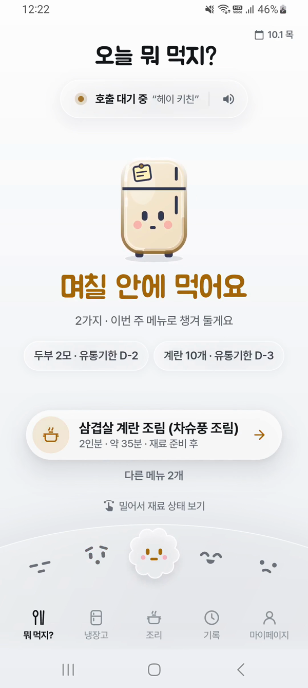
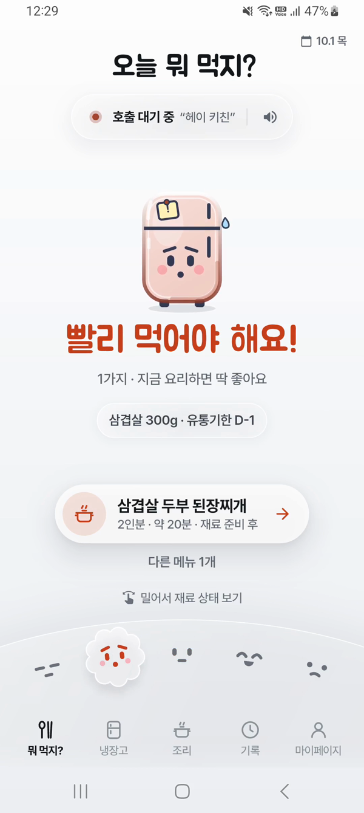
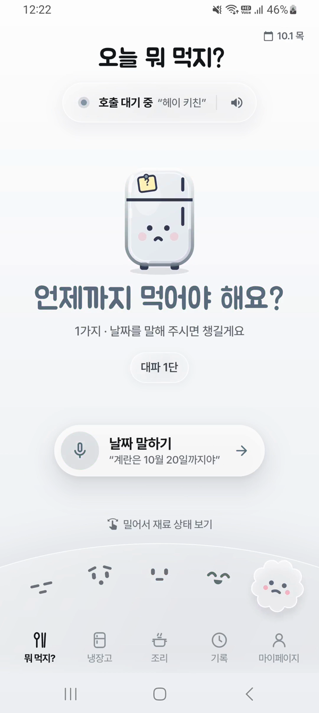
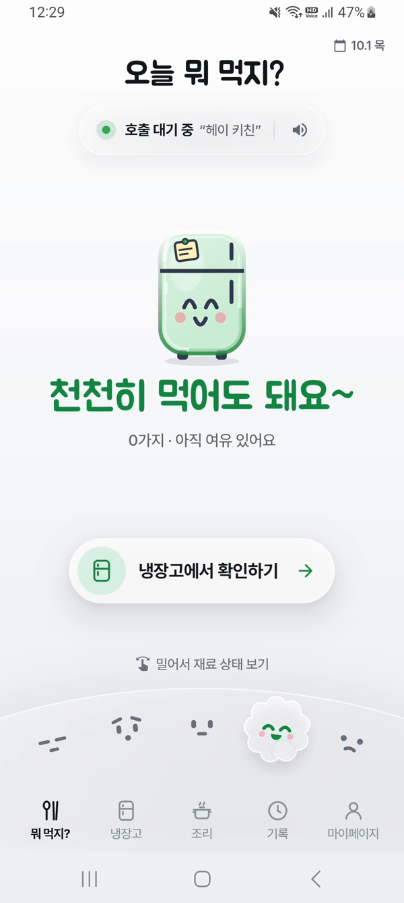
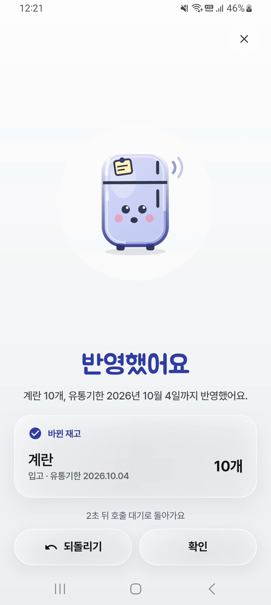
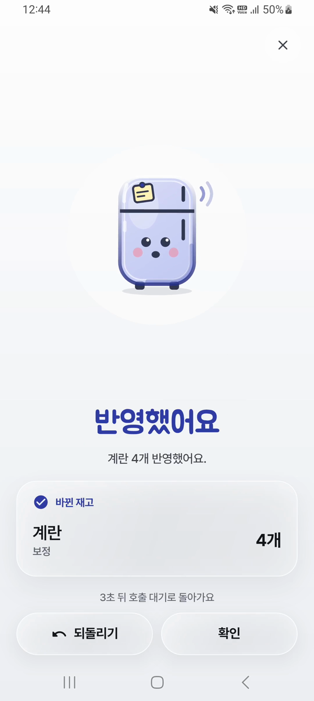
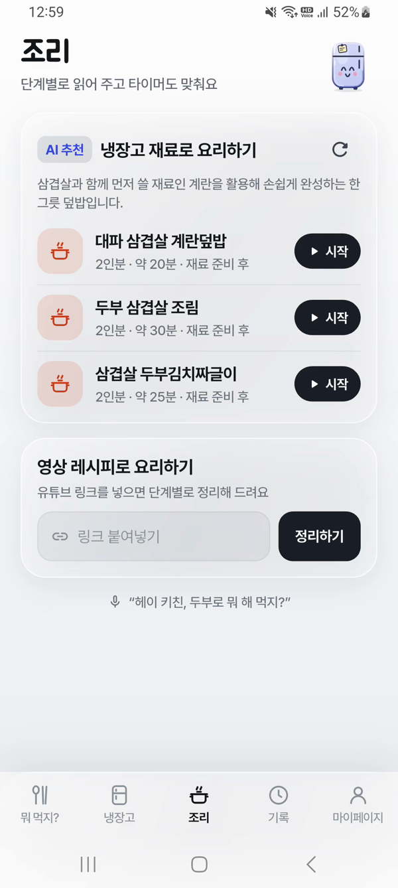
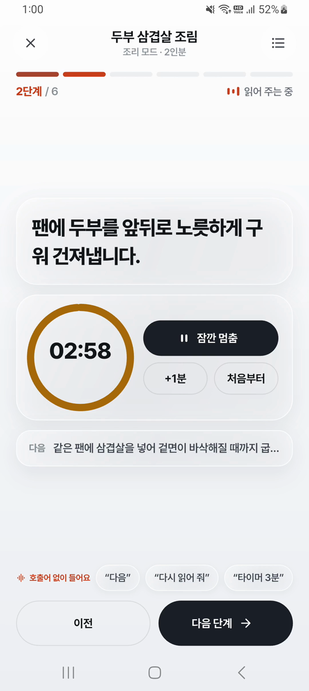

오늘 뭐 먹지?
먼저 쓸 재료로 정하는 오늘의 한 끼
답은 냉장고 안에
있는데
무엇이 남았는지,
무엇부터 먹어야 할지
- 계란10개 D-3 며칠 남음
- 삼겹살300g D-1 기한 코앞
- 두부2모 D-2 며칠 남음
- 대파1단 기한 모름
기한별로,
먼저 쓸 재료부터
먼저 먹을 재료와,
아직 여유 있는 재료를 한눈에
실제 앱 화면




- 빨리 먹어야 해요삼겹살 300g · D-1
- 며칠 안에 먹어요두부 2모 · 계란 10개
- 천천히 먹어도 돼요아직 여유
- 언제까지 먹어야 해요?기한을 입력하지 않은 대파
말로 기록하고,
먹은 만큼 맞추고
계란 열 개 넣었어.
재료·수량·기한 기록
유통기한은 10월 4일까지야.계란 두 개 썼어.
사용량 반영계란 네 개 남았어.
남은 수량 다시 맞추기
실제 앱 화면


먼저 쓸 재료가 오늘의 메뉴로
- 메뉴 추천
- 인분 조절
- 단계별 조리
- 재고 반영추천 메뉴 조리 완료 시
추천 메뉴

단계별 조리 · 타이머

유튜브에서 본 요리도
링크 입력 재료·조리 순서 분석 조리 안내
실제 앱 시연
말로 기록한 재료가 오늘의 한 끼로
단계마다, 필요한 AI
- 단계활용 도구선택 목적
- 기획·설계·기술 검증GPT / Astra빠른 응답으로 선택지 비교·방향 조정
- 디자인Claude Design 직접 보기애니메이션 목업으로 화면·테마 비교
- 구현Claude Code앱·서버 개발, 테스트·배포
- 문서·검토 기준기존 자체 도구engsys문서 정책과 hook·검증 절차 적용
시연 영상 편집과 웹 발표자료 제작에도 AI 활용
기술 선택과 제약 해결
유튜브 링크를 조리 안내로
유튜브 URL 입력을 공식 지원하는 Gemini 선택명령 해석·메뉴 추천도 통일해 연동·검증 범위 축소
한국식 발음도 같은 호출로
“헤이 키친”의 다양한 인식 결과를
발음 유사성으로 판별
- 헤이키친
- 베이키친
- 에이키친
- hat kitchen
“헤이 키친”호출로 판단
“오늘 뭐 먹지?”라는 고민을,
냉장고를 비우는 한 끼로 연결합니다.